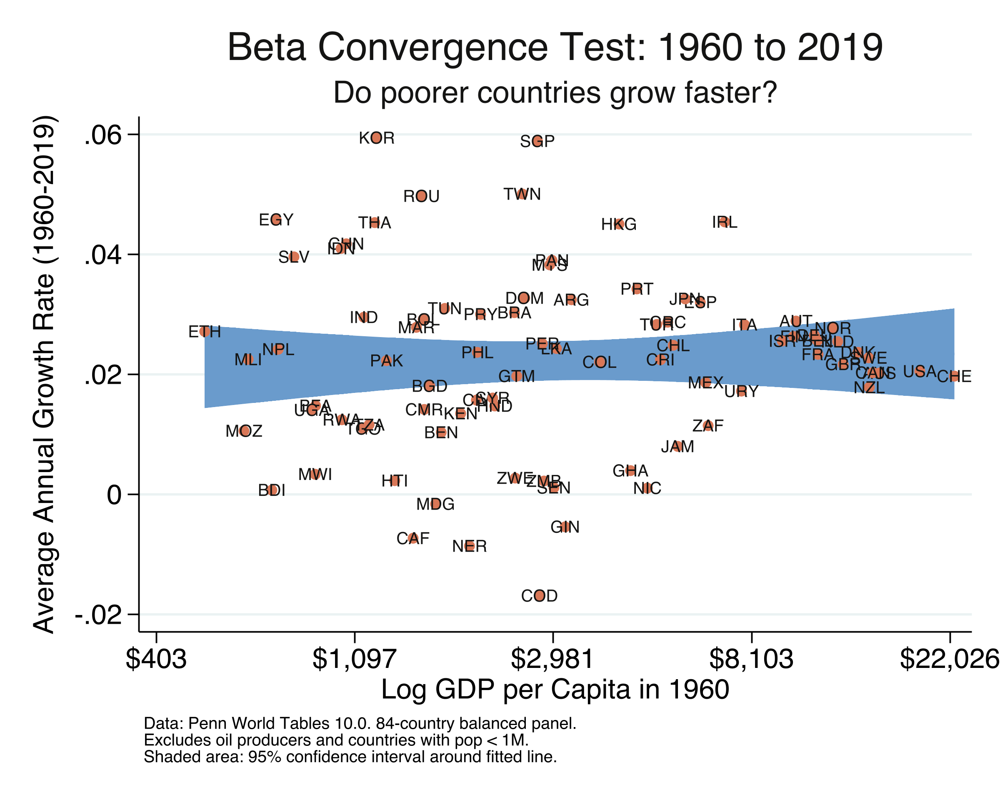
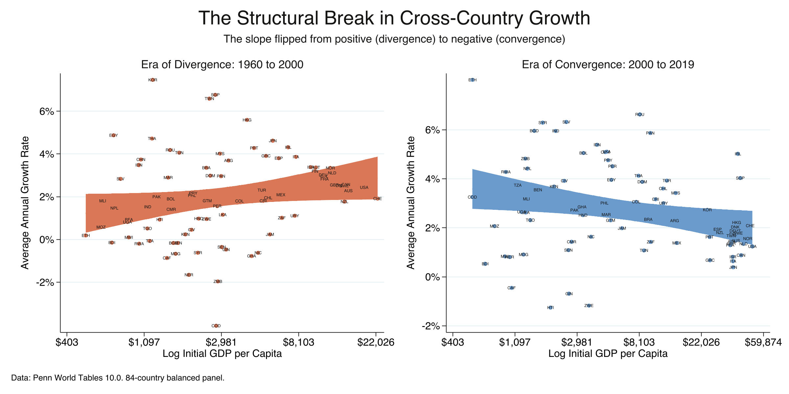
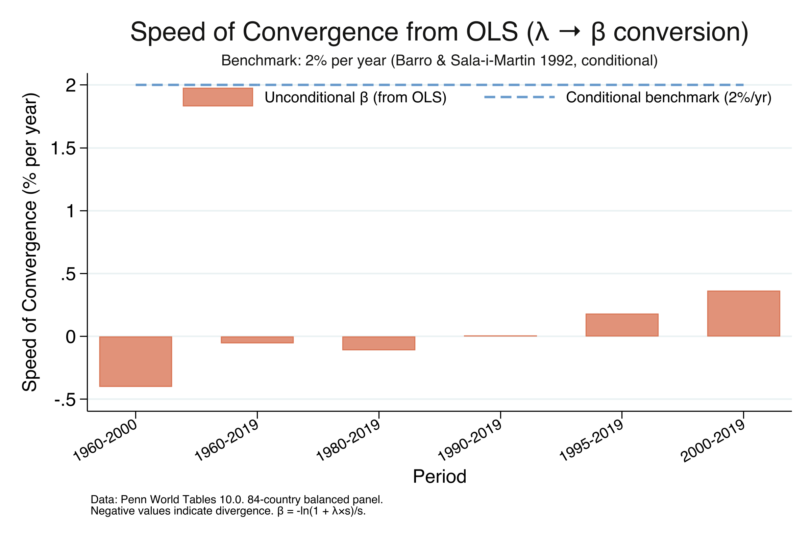
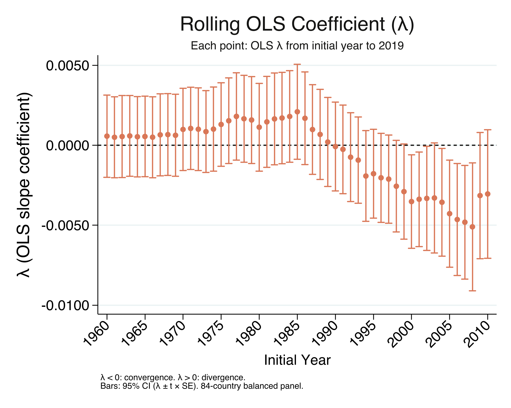
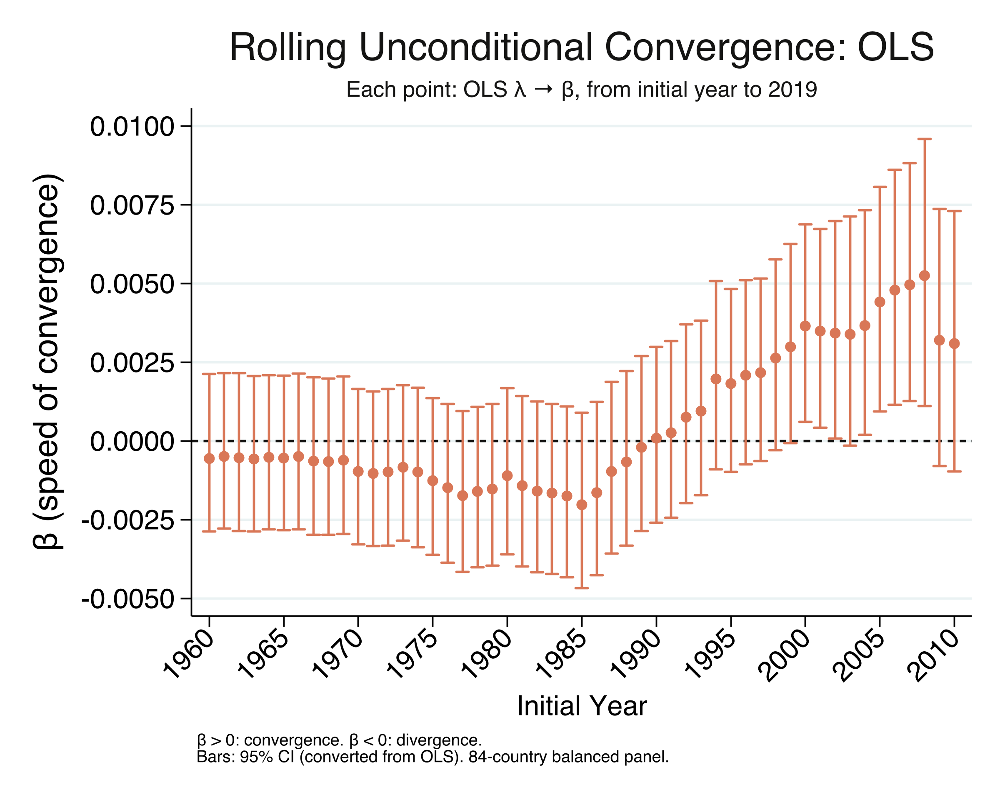
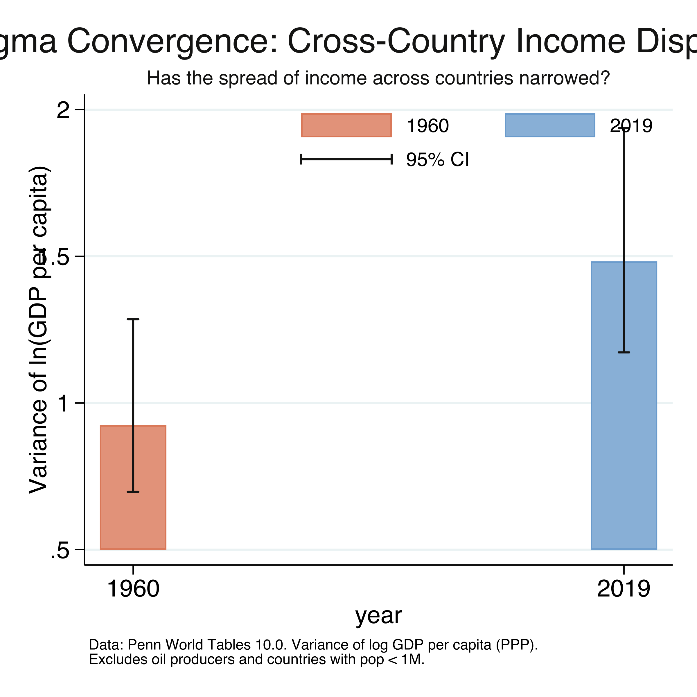
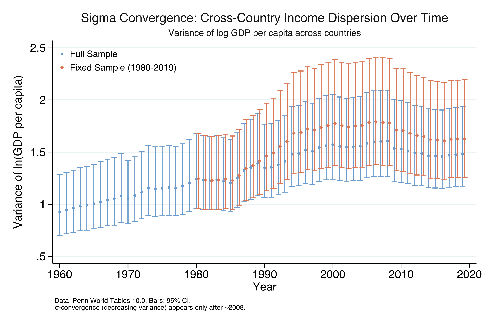
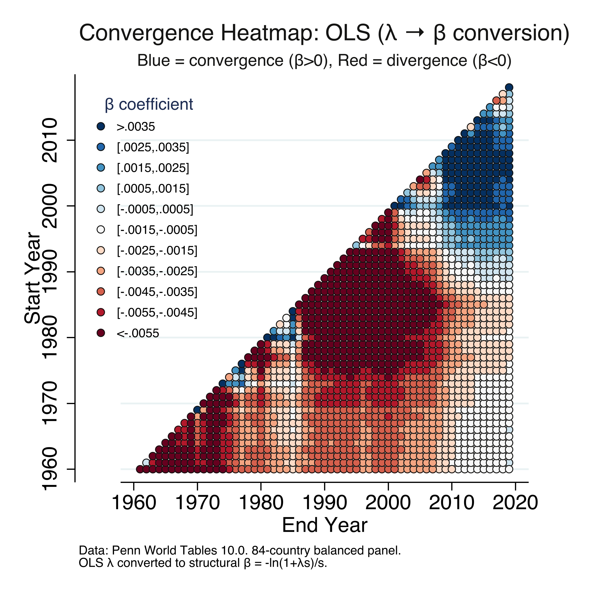

Are poor countries catching up? A convergence toolkit in Stata
Nagoya University (GSID)
July 8, 2026
Act I
If poorer economies grow faster than richer ones, today’s vast income gaps close on their own.
For four decades the evidence said no: from 1960 to 2000 the rich pulled further ahead. So is convergence simply dead?

Annualized growth (1960–2019) versus log initial income. The fitted line is flat: starting income has essentially no predictive power.
The twist this talk delivers: beta convergence can be real while the distribution still widens.
Act II
5,040 country-year rows. Balanced means the same 84 countries appear every year — so no composition effects.
\[g_i = \alpha + \lambda \cdot \ln(y_{i,0}) + \varepsilon_i\]
\(g_i\) is country \(i\)’s annualized growth; \(\ln(y_{i,0})\) is its log starting income. A negative \(\lambda\) means convergence — the poor grow faster.

Era of divergence (1960–2000, orange) versus era of convergence (2000–2019, steel): the slope flips sign.
| Period | \(\lambda\) | p | Verdict |
|---|---|---|---|
| 1960–2000 | +0.00437 | 0.007 | divergence |
| 2000–2019 | −0.00352 | 0.019 | convergence |
A total swing of 0.0079 — a complete reversal that the 60-year pooled regression silently averaged away.
\[\beta = \frac{-\ln(1 + \lambda s)}{s} \qquad\qquad \tau = \frac{\ln 2}{\beta}\]
\(\lambda\) depends on the window length \(s\); the Barro–Sala-i-Martin speed \(\beta\) does not. The half-life \(\tau\) is the years to close half the gap.

Speed of unconditional convergence (β) across six windows; dashed line = the classic 2% conditional benchmark.
190 years
to close half the income gap at the 2000–2019 speed (\(\beta = 0.00365\))
\[\frac{1}{s}\ln\!\frac{y_{i,t+s}}{y_{i,t}} = \alpha - \frac{1 - e^{-\beta s}}{s}\,\ln(y_{i,t}) + \varepsilon_i\]
OLS needs parameters to enter linearly. Here \(\beta\) is trapped in \(e^{-\beta s}\) — so OLS can only recover the whole blob \(\lambda\), then we back out \(\beta\).
nl estimates \(\beta\) in one line — start it at the 2% benchmark{b1=0.02} is \(\beta\) with the 2% benchmark as its starting guess; the iterative solver then minimises squared residuals.
| Period | OLS → \(\beta\) | NLS \(\beta\) | difference |
|---|---|---|---|
| 2000–2019 | +0.00365 | +0.00365 | \(10^{-17}\) |
| 1995–2019 | +0.00182 | +0.00182 | \(10^{-17}\) |
| 1960–2000 | −0.00402 | −0.00402 | \(10^{-16}\) |
The Barro–Sala-i-Martin equation is a reparameterization of the linear model — so the two routes must coincide.

Rolling OLS \(\lambda\) from each start year to 2019, with 95% confidence intervals. Negative \(\lambda\) = convergence.

Rolling structural \(\beta\) (OLS conversion; NLS is identical) from each start year to 2019, with 95% CIs.
Act III

Variance of log GDP per capita, 1960 versus 2019 (same 84 countries), with chi-squared 95% CIs.

Year-by-year variance of log income (84-country panel). It peaks in 2008, then declines.
Objection. Surely faster growth at the bottom must shrink the spread — this looks like a contradiction.
Response. No. Beta convergence is the average tendency; sigma is the realized spread. Random shocks can widen the distribution even while the rear runners accelerate. Beta is necessary but not sufficient for sigma — exactly what 1960–2008 shows.

Convergence heatmap over all start/end-year pairs (OLS β; the NLS heatmap is virtually identical). Blue = convergence, red = divergence.
Objection. Does a negative slope prove that being poor causes faster growth?
Response. No. This is unconditional convergence — a descriptive association across countries, not an ATE. A causal reading needs controls for institutions, human capital, and policy; the regression deliberately omits them.